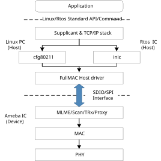
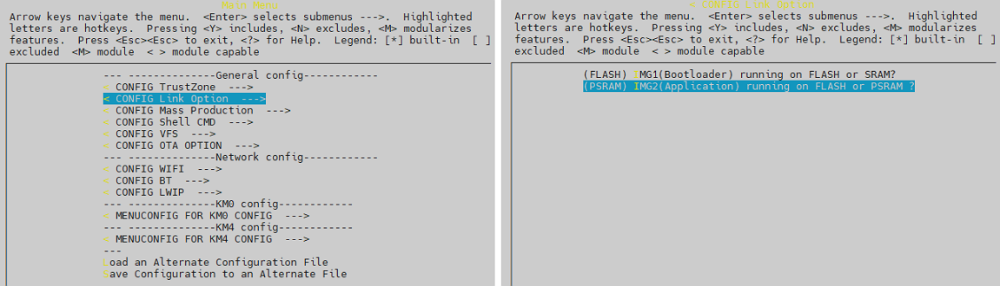
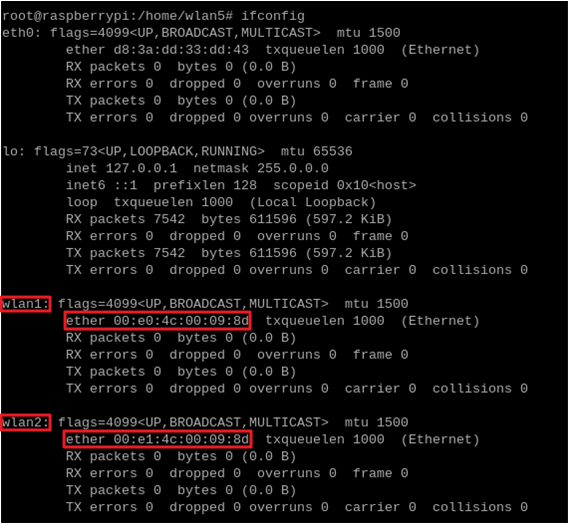

FullMAC简介
在Wi-Fi FullMAC 方案中, Ameba作为网卡, 通过UART/SPI/SDIO/USB与主机MCU连接, 为主机MCU提供网络连接功能.
FullMAC架构
FullMAC 提供如下功能:
提供了host和device之间基于UART/SPI/SDIO/USB的传输通路
支持标准的Linux wpa_supplicant 和 cfg80211 无线架构
传输接口除了可以用于传输WiFi/BT 相关的指令数据，还为客户提供了定制命令接口
如下图所示 host 可以是Linux/Rtos/Zephyr OS, device 是指支持FullMAC的Ameba SoC。
{kind=link}

FullMAC architecture
FullMAC的特点
Features |
Linux host |
FreeRTOS host |
Zephyr host |
|---|---|---|---|
SoC supported |
RTL8721Dx/RTL8711Dx |
RTL8721Dx/RTL8711Dx |
RTL8721Dx/RTL8711Dx |
Transport interface |
|
|
|
Wi-Fi & BT transport combinations |
|
|
|
Wi-Fi features |
802.11 a/b/g/n/ax |
802.11 a/b/g/n/ax |
802.11 a/b/g/n/ax |
Wi-Fi configuration mechanism |
Standard Linux APIs |
FreeRTOS Wi-Fi APIs |
Standard Zephyr APIs |
Wi-Fi mode |
|
|
|
Wi-Fi security |
|
|
|
Power saving |
Wowlan |
Wowlan |
Wowlan |
Bluetooth features |
|
|
|
FullMAC传输接口
Ameba SoC |
Interface |
Wi-Fi |
BT |
|---|---|---|---|
RTL8721Dx
RTL8711Dx
|
SDIO |
Y |
Y |
SPI |
Y |
Y |
|
USB |
Y |
X |
|
UART |
X |
X |
|
SDIO (Wi-Fi) + UART (BT) |
Y |
Y |
|
SPI (Wi-Fi) + UART (BT) |
Y |
Y |
|
USB (Wi-Fi) + UART (BT) |
X |
X |
Ameba SoC |
Interface |
Wi-Fi |
BT |
|---|---|---|---|
RTL8721Dx
RTL8711Dx
|
SDIO |
Y |
Y |
SPI |
Y |
Y |
|
USB |
X |
X |
|
UART |
X |
X |
|
SDIO (Wi-Fi) + UART (BT) |
Y |
Y |
|
SPI (Wi-Fi) + UART (BT) |
Y |
Y |
|
USB (Wi-Fi) + UART (BT) |
X |
X |
Ameba SoC |
Interface |
Wi-Fi |
BT |
|---|---|---|---|
RTL8721Dx
RTL8711Dx
|
SDIO |
Y |
X |
SPI |
X |
X |
|
USB |
X |
X |
|
UART |
X |
X |
|
SDIO (Wi-Fi) + UART (BT) |
X |
X |
|
SPI (Wi-Fi) + UART (BT) |
X |
X |
|
USB (Wi-Fi) + UART (BT) |
X |
X |
FullMAC文件目录
Wi-Fi
FullMAC Device驱动文件位于 {SDK}/component/wifi/inic。 编译FullMAC SDK的时候这些文件会被编译。
Low-level driver
└── sdio
└── inic_sdio_dev.c
└── spi
├── inic_spi_dev.c
└── usb
└── inic_usb_dev.c
FullMAC common driver
└── none_ipc_dev
├── inic_dev_api.c
├── inic_dev_bridge.c
├── inic_dev_msg_queue.c
└── inic_dev_protocal_offload.c
FullMAC RTOS Host 驱动文件位于 {SDK}/component/wifi/inic。 开发者移植相关文件文件到Host MCU中即可。
注意：开发者需要使用Host OS的接口来实现none_ipc_rtos中的系统相关接口，用于Host OS和FullMAC的对接。
Low-level driver
└── spi
├── inic_spi_host.c
└── inic_spi_host_trx.c
FullMAC common driver
└── none_ipc_host
├── inic_host_api.c
├── inic_host_api_basic.c
├── inic_host_api_bt.c
└── inic_host_api_ext.c
└── none_ipc_rtos
FullMAC Linux Host 驱动文件位于 {SDK}/component/wifi/cfg80211_fullmac。开发者要移植相关文件到Host Linux SDK。
Low-level hardware driver
└── common
├── rtw_ioctl.c
├── rtw_ioctl.h
├── rtw_llhw_event.h
├── rtw_llhw_event_rx.c
├── rtw_llhw_event_tx.c
├── rtw_llhw_hci.c
├── rtw_llhw_hci.h
├── rtw_llhw_hci_memory.c
├── rtw_llhw_ops.c
├── rtw_llhw_pkt_rx.c
├── rtw_llhw_pkt_tx.c
├── rtw_llhw_trx.h
└── rtw_protocal_offload.c
└── sdio
├── Kbuild
├── rtw_sdio.h
├── rtw_sdio_drvio.c
├── rtw_sdio_drvio.h
├── rtw_sdio_fwdl.c
├── rtw_sdio_init.c
├── rtw_sdio_ops.c
├── rtw_sdio_ops.h
├── rtw_sdio_probe.c
└── rtw_sdio_reg.h
└── spi
├── Kbuild
├── rtw_spi.h
├── rtw_spi_ops.c
├── rtw_spi_probe.c
└── spidev-overlay.dts
└── usb
├── Kbuild
├── rtw_usb.h
├── rtw_usb_ops.c
└── rtw_usb_probe.c
FullMAC driver
├── rtw_acs.c
├── rtw_acs.h
├── rtw_cfg80211_fullmac.h
├── rtw_cfg80211_ops.c
├── rtw_cfg80211_ops_ap.c
├── rtw_cfg80211_ops_key.c
├── rtw_cfg80211_ops_nan.c
├── rtw_cfg80211_ops_p2p.c
├── rtw_cfgvendor.c
├── rtw_cfgvendor.h
├── rtw_drv_probe.c
├── rtw_drv_probe.h
├── rtw_ethtool_ops.c
├── rtw_ethtool_ops.h
├── rtw_functions.h
├── rtw_netdev_ops.c
├── rtw_netdev_ops.h
├── rtw_netdev_ops_p2p.c
├── rtw_proc.c
├── rtw_proc.h
├── rtw_promisc.c
├── rtw_promisc.h
├── rtw_regd.c
├── rtw_regd.h
├── rtw_wiphy.c
└── rtw_wiphy.h
Bluetooth
FullMAC硬件配置
接口连接
FullMAC 目前经过测试的Host有：Linux @ PC/Linux @ Raspberry Pi/RTOS @ STM32。 下表所示是Ameba 和 Raspberry Pi的pin脚连接。
Interface |
RTL8721Dx |
Raspberry Pi |
Function |
Description |
|---|---|---|---|---|
SDIO |
PB6 |
GPIO 26 |
SDIO_DAT2 |
SDIO pins |
PB7 |
GPIO 27 |
SDIO_DAT3 |
||
PB8 |
GPIO 23 |
SDIO_CMD |
||
PB9 |
GPIO 22 |
SDIO_CLK |
||
PB13 |
GPIO 24 |
SDIO_DAT0 |
||
PB14 |
GPIO 25 |
SDIO_DAT1 |
||
SPI |
PB24 |
GPIO 10 |
SPI_MOSI |
SPI pins |
PB25 |
GPIO 9 |
SPI_MISO |
||
PB23 |
GPIO 11 |
SPI_CLK |
||
PB26 |
GPIO 8 |
SPI_CS |
||
PB8 |
GPIO 23 |
DEV_TX_REQ |
Ameba SoC use rising edge of this pin to indicate if device has data to send to host |
|
PB9 |
GPIO 22 |
DEV_READY |
Ameba SoC use level of this pin to indicate if it is ready to receive host data
|
|
USB??? |
PB6 |
GPIO 26 |
SDIO_DAT2 |
SDIO_DAT2 |
PB7 |
GPIO 27 |
SDIO_DAT3 |
SDIO_DAT3 |
|
PB8 |
GPIO 23 |
SDIO_CMD |
SDIO_CMD |
|
PB9 |
GPIO 22 |
SDIO_CLK |
SDIO_CLK |
|
PB13 |
GPIO 24 |
SDIO_DAT0 |
SDIO_DAT0 |
|
PB14 |
GPIO 25 |
SDIO_DAT1 |
SDIO_DAT1 |
|
UART |
PB14 |
GPIO 25 |
SDIO_DAT1 |
SDIO_DAT1 |
PB14 |
GPIO 25 |
SDIO_DAT1 |
SDIO_DAT1 |
Note
以上Ameba的SDIO pin是 SDK的默认pin脚，如果开发者使用另外的pin脚做SDIO，则需要修改SPDIO_Board_Init 中的SDIO pinmux配置。
这个文件位于如下位置:
component/soc/amebadplus/hal/src/spdio_api.c
目前Host端的SDIO interrupt实现的是标准SDIO 中断模式, SDIO_DATA1必须配置为SDIO而不是GPIO。如果Host端不支持SDIO 中断，开发者可以考虑使用polling模。
SDIO转接板
由于SDIO 飞线可能会导致信号传输质量差，无法使用较高的频率传输。可以购买SDIO转接板连接到Ameba的SDIO pin脚，如下图所示：

FullMAC SDIO 转接板
Note
瑞昱的SDIO转接板也即将上线销售，当前可以先直接联系<claire_wang@realsil.com.cn>索取。
树莓派
为了实现高速传输，建议将Amaba的Demo板的 SDIO pin脚直接焊接到树莓派对应的pin脚，如下图所示：

RTL8721Dx connection with Raspberry Pi
FullMAC WiFi Device 驱动移植指南
在目录
{SDK}/amebadplus_gcc_project``中执行 ``./menuconfig.py找到 , 选择:menuselection:PSRAM：

找到 , 选择需要的接口：

执行make产生
km4_boot_all.bin和km0_km4_app.bin.使用image tool下载image到Demo板。
{kind=link}
FullMAC Wi-Fi Host 驱动移植指南
如果开发者使用Ameba作为FullMAC Host MCU:
在路径``{SDK}/amebadplus_gcc_project``执行``./menuconfig.py``
找到 , 选择需要的接口：

执行make产生
km4_boot_all.bin和km0_km4_app.bin.使用image tool下载image到Demo板。
如果您使用其它IC，你可以将相关文件移植到Host SD。
FullMAC 当前基于Linux 内核 5.4 和 5.10进行测试和验证，如果您再其它内核遇到编译问题，请联系<claire_wang@realsil.com.cn>。
Note
SPI会在CS pin拉low并检测到CLK后，立刻进行数据传输。在bus busy的时候可能会存在一些corner case 经过测试和分析，在CS拉low和host推clk之间加入7us的delay可以在bus busy的情况下保证安全的数据传输。 但是，在一些旧版本的系统上，spi driver可能不支持spi_delay，这样就需要直接去修改driver code来保证这段delay时间。
准备工作
在Linux系统安装如下软件：
sudo apt-get install build-essential
sudo apt install dhcpcd
sudo apt install hostapd
sudo apt install dhcpd
使能传输接口
对于Linux PC, 跳过此步。
对于Raspberry Pi:
使用
dtoverlay指令配置 SDIO。对于 Raspberry Pi 4, 输入如下指令:
sudo dtoverlay sdio poll_once=off
使能 SPI：
sudo raspi-config选择 ：
生成Device Tree：
sudo su cd {driver_path}/cfg80211_fullmac/rtl8730e/spi dtc -@ -Hepapr -I dts -O dtb -o inic_spidev.dtbo spidev-overlay.dts cp inic_spidev.dtbo /boot/overlays/ dtoverlay inic_spidev
构建模块
在目录
/component/wifi/cfg80211_fullmac下执行如下操作：
./fullmac_setup.sh sdio
./fullmac_setup.sh spi
./fullmac_setup.sh usb
将``cfg80211_fullmac`` copy到 Linux 内核。
打开终端执行如下操作:
cd {driver_path}/cfg80211_fullmac;make
{kind=link}
加载FullMAC Host 驱动：
:.ko文件
/cfg80211_fullmac/sdio/fullmac_sdio.kosudo su cp sdio/fullmac_sdio.ko /lib/modules/XXX/ depmod modprobe fullmac_sdio
:.ko文件
/cfg80211_fullmac/spi/fullmac_spi.kosudo su cp spi/fullmac_spi.ko /lib/modules/XXX/ depmod modprobe fullmac_spi
:.ko文件
/cfg80211_fullmac/usb/fullmac_usb.kosudo su cp usb/fullmac_spi.ko /lib/modules/XXX/ depmod modprobe fullmac_usb
ko文件加载成功之后, 使用
ifconfig命令可以获取到WiFi网络设备的相关信息。 如下图所示，MAC地址为``00:e0:4c``的是Station模式, MAC地址为00:e1:4c is的是softAP模式。
连接AP
Note
对于 Ubuntu 系统, 如果开发者想使用命令行连接AP和获取IP地址，请首先执行如下命令关闭NetworkManager 和 DHCP 以避免UI同时控制*wpa_supplicant*。
sudo su systemctl stop NetworkManager systemctl disable NetworkManager systemctl stop dhcpcd.service
在``/etc/wpa_supplicant/`` 下面创建文件`wpa_supplicant.conf`添加AP的信息，如下图所示是一个WPA2的实例，更多配置请参考wpa_supplicant的官方文档。
ctrl_interface=/var/run/wpa_supplicant network={ ssid="HUAWEI-JX2UX5_HiLink_5G" psk="12345678" }
使用如下命令连接AP:
Wpa_supplicant -D nl80211 -i wlanX -c /etc/wpa_supplicant/wpa_supplicant.conf -dd > /var/wifi_log
Note
wlanX 是在 Step 3 中获取的Station 模式的设备名称。
获取IP地址:
dhcpcd wlanX
softAP的使用
在
/etc/hostapd/下创建文件hostapd.conf配置softAP，如下是一个WPA2的实例，更多配置请参考wpa_supplicant的官方文档。driver=nl80211 logger_syslog=-1 logger_syslog_level=2 logger_stdout=-1 logger_stdout_level=2 ctrl_interface=/var/run/hostapd hw_mode=g channel=6 ssid=aaa_test beacon_int=100 dtim_period=1 max_num_sta=8 rts_threshold=2347 fragm_threshold=2346 ieee80211n=1 erp_send_reauth_start=1 wpa=2 wpa_key_mgmt=WPA-PSK wpa_pairwise=CCMP wpa_passphrase=12345678
在
/etc/下面创建文件 udhcpd_wlanX.conf，并添加如下信息：# The start and end of the IP lease block start 192.168.43.20 end 192.168.43.254 # The interface that udhcpd will use interface wlanX opt dns 192.168.43.1 129.219.13.81 option subnet 255.255.255.0 opt router 192.168.43.1 option domain local option lease 864000 # default: 10 days option msstaticroutes 10.0.0.0/8 10.127.0.1 # single static route option staticroutes 10.0.0.0/8 10.127.0.1, 10.11.12.0/24 10.11.12.1 option 0x08 01020304 # option 8: "cookie server IP addr: 1.2.3.4"
启动 softAP：
hostapd /etc/hostapd/hostapd.conf -i wlanX
Note
wlanX 是在 Step 3 中获取的Station 模式的设备名称。
设置IP地址：
ifconfig wlanX 192.168.43.1
开启DHCP 服务.
udhcpd -f /etc/udhcpd_wlanX.conf
{kind=link}
FullMAC BT Device 驱动移植指南
FullMAC BT Host 驱动移植指南
FullMAC WiFi 吞吐量
Interface |
Item |
BW 20M (Mbps) |
|---|---|---|
SPI |
TCP RX |
8.3 |
TCP TX |
9.9 |
|
UDP RX |
15.8 |
|
UDP TX |
17.6 |
Interface |
Wi-Fi driver location |
Item |
BW 20M (Mbps) |
BW 40M (Mbps) |
|---|---|---|---|---|
SDIO [1] |
KM0 |
TCP RX |
36 |
42 |
TCP TX |
46 |
54 |
||
UDP RX |
50 |
60 |
||
UDP TX |
55 |
62 |
||
KM4 (331MHz) |
TCP RX |
41 |
58 |
|
TCP TX |
46 |
80 |
||
UDP RX |
53 |
74 |
||
UDP TX |
53 |
90 |
||
SPI [2] |
KM0 |
TCP RX |
14.5 |
|
TCP TX |
16 |
|||
UDP RX |
17.4 |
|||
UDP TX |
17.8 |
|||
USB [3] |
TCP RX |
|||
TCP TX |
||||
UDP RX |
||||
UDP TX |
[1] The data is the test result of device code running in PSRAM, host driver running on Dell Optiplex 3080 MT.
[2] The data is the test result of device code running in PSRAM, host driver running on Raspberry Pi 4.
[3] The data is the test result of device code running in
FullMAC 内存需求
Device
Take the Wi-Fi driver running on KM0 for an example:
Item |
KM0 |
KM4 |
|---|---|---|
txt |
270KB |
31KB |
rodata |
51KB |
9KB |
data+bss |
17KB |
4KB |
heap |
~68KB |
~2.5KB |
Host
Host |
Item |
inic |
|---|---|---|
SPI |
txt |
4.8KB |
bss |
~3.5KB |
|
heap |
~5KB |
Host |
Item |
fullmac_xxx.ko |
|---|---|---|
SDIO |
txt |
88KB |
data |
65KB |
|
bss |
18KB |
|
SPI |
txt |
73KB |
data |
54KB |
|
bss |
18KB |
|
USB |
txt |
|
data |
||
bss |
Note
The characters before .ko are sdio, spi or usb, corresponding to different hosts.